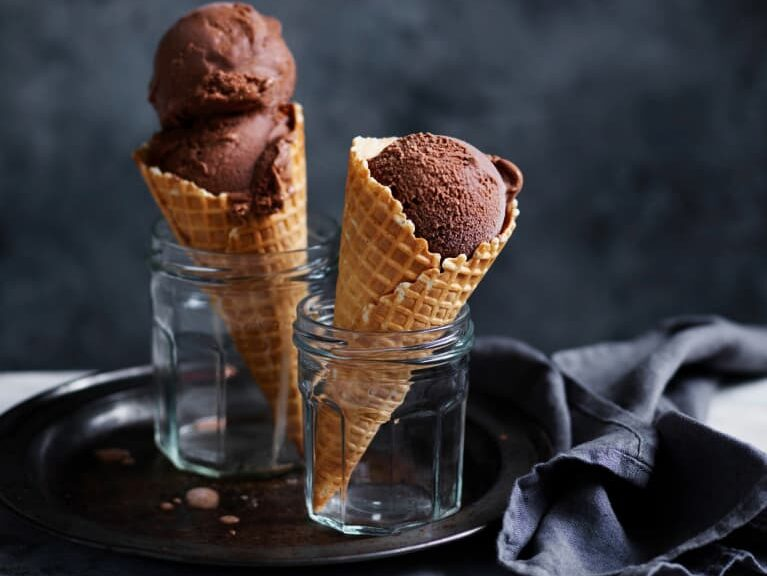
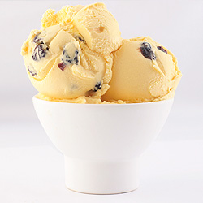

TIPOS DE HELADOS
CLASICOS
CHOCOLATE

14,00 $El helado de chocolate es un postre popular, caracterizado por su textura cremosa y un intenso sabor a cacao, obtenido al mezclar cacao en polvo o cobertura de chocolate con lácteos (leche/crema), azúcar y a veces yemas de huevo.
Es un alimento que aporta energía, calcio, fósforo y magnesio, además de mejorar el estado de ánimo por sus componentes.
VAINILLA
 16,00 $
16,00 $
Es un helado clásico cremoso y versátil, elaborado principalmente con leche, crema, azúcar y saborizante (vainilla natural o artificial).
Posee una textura suave, un color blanco amarillento y, a menudo, presenta pequeñas motitas negras si se usa vaina de vainilla real. Es un sabor dulce, aromático y comúnmente utilizado como base para otros postres o helados.
FRESA
 11,00 $
11,00 $
El helado de fresa es un postre clásico caracterizado por su color rosado pastel, textura cremosa y sabor dulce, fresco y frutal.
Elaborado principalmente con puré o trozos de fresa, crema, leche y azúcar, es uno de los sabores fundamentales del helado napolitano y destaca por su frescura, siendo un clásico atemporal.
VARIADOS
LIMON
 12,00 $
12,00 $
El helado de limón es un postre cítrico, refrescante y ligero, caracterizado por su equilibrio entre acidez y dulzura.
Generalmente elaborado con zumo de limón natural, puede presentarse como sorbete (base agua) o crema (base láctea). Es ideal para días calurosos, siendo una opción popular por su textura suave y sabor intenso.
RON PASAS

12,00 $Es un helado cremoso caracterizado por una base de helado (generalmente vainilla o crema) saborizada con ron y la incorporación de uvas pasas maceradas, a menudo descrita como una versión caribeña.
Ofrece una textura suave y untuosa, con un sabor dulce y alcohólico, conteniendo habitualmente menos del 0.5% de alcohol, lo que lo hace apto para consumo general.
COOKIES AND CREAM
 12,00 $
12,00 $
El helado de Cookies and Cream se caracteriza por una base cremosa de vainilla o crema dulce mezclada con trozos crujientes de galletas de chocolate (tipo Oreo).
Ofrece un contraste de texturas (suave y crocante) y un sabor equilibrado, dulce y ligeramente amargo por el cacao. Es un sabor clásico, popular por su textura melosa y sus trozos de galleta.
NUEVOS
PISTACHO
 10,00 $
10,00 $
El helado de pistacho se caracteriza por su sabor intenso y frutos seco, con un equilibrio entre dulce y ligeramente salado, y una textura cremosa, a menudo conteniendo trozos de fruto seco.
Elaborado con pasta de pistacho o pistachos naturales, presenta un tono verde pálido o sutil, siendo rico en nutrientes como proteínas, fibra y grasas saludables.
ALMENDRAS
10,00 $El helado de almendras se caracteriza por su textura cremosa y suave, ofreciendo un sabor a nuez sutil pero distintivo, frecuentemente potenciado con extracto de almendra.
Puede ser elaborado con base láctea o vegetal (vegano), incorporando almendras tostadas o fileteadas para aportar un toque crujiente. Es un postre versátil, a menudo asociado a las cocinas mediterráneas y del Medio Oriente.
MENTA
10,00 $El helado de menta se caracteriza por su sabor fresco, refrescante y distintivo, frecuentemente combinado con chispas de chocolate (menta granizada) para crear un contraste crujiente.
Suele tener un color verde vibrante debido a colorantes, aunque variantes naturales pueden ser blancas o beige. Tiene una textura cremosa y es popular por su efecto digestivo y estimulante.